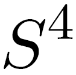

S4 Home | Download | FAQ | Lua API | Developer information | Changelog

Stanford Stratified Structure Solver
S4 is a frequency domain code to solve layered periodic structures.
Internally, it uses Rigorous Coupled Wave Analysis (RCWA; also called the Fourier Modal Method (FMM)) and the S-matrix algorithm. S4 was developed by Victor Liu of the Fan Group in the Stanford Electrical Engineering Department.
Contents
Program usage
The program may be run with a Lua script as an argument, in which case the script is run and then the program terminates, or without an argument, in which case it enters interactive mode with a Lua shell.
The basic flow of a script is listed below.
- Obtain a new simulation object:
S = S4.NewSimulation()
S now contains a simulation object with a blank specification, and
no solutions.
- Define all materials:
S:AddMaterial(‘name’, {eps_real, eps_imag})
- Add all layers:
S:AddLayer(‘name’, thickness, ‘material_name’)
- Add patterning to layers:
S:SetLayerPatternCircle(‘layer_name’,
‘inside_material’,
{center_x, center_y},
radius)
- Specify the excitation mechanism:
S:SetExcitationPlanewave(
{angle_phi, angle_theta}, – phi in [0,180), theta in [0,360)
{s_pol_amp, s_pol_phase}, – phase in degrees
{p_pol_amp, p_pol_phase})
- Specify the operating frequency:
S:SetFrequency(0.4)
- Obtain desired output:
forward_power, backward_power = S:GetPoyntingFlux(‘layer_name’, z_offset)
print(forward_power, backward_power)
Feedback and contact
For support of the S4 package, contact the author Victor Liu (vkl@stanford.edu).